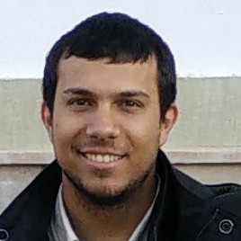

Konstantinos Chatzilygeroudis
I build robots that learn, adapt and act safely in the real world — combining reinforcement learning, evolutionary optimization and optimal control, and testing the results on physical hardware.
I lead the robot-learning work of the Laboratory of Automation & Robotics (LAR) at the University of Patras. My group designs algorithms — from Quality-Diversity search to structure-exploiting trajectory optimization — and evaluates them on physical robots, from legged platforms to manipulators.
Previously, I was a post-doctoral fellow at LASA, EPFL and at the Computational Intelligence Laboratory, University of Patras, where I was Principal Investigator of the H.F.R.I.-funded NOSALRO project (2022–2025). I hold a PhD in Robotics and Machine Learning from the University of Lorraine / Inria Nancy (LARSEN team).
- Winner, both Pendubot and Acrobot tracks — 4th AI Olympics with RealAIGym, IJCAI–ECAI 2026
- Co-Chair, IEEE–RAS Technical Committee on Optimization for Robotics · Associate Editor, IEEE RA-L
- Best Paper Award, Complex Systems Track — GECCO 2022
- H.F.R.I. grant recipient for Post-Doctoral Researchers (2022)
The real-time NMPC controller — built on a structure-exploiting SQP solver combining ADMM and interior-point methods — that won both tracks of the 4th AI Olympics with RealAIGym, evaluated on remote CloudPendulum hardware without prior knowledge of the system parameters.
Robot learning, evolutionary optimization and optimal control — algorithms that work on physical robots, not only in simulation.